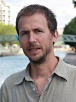
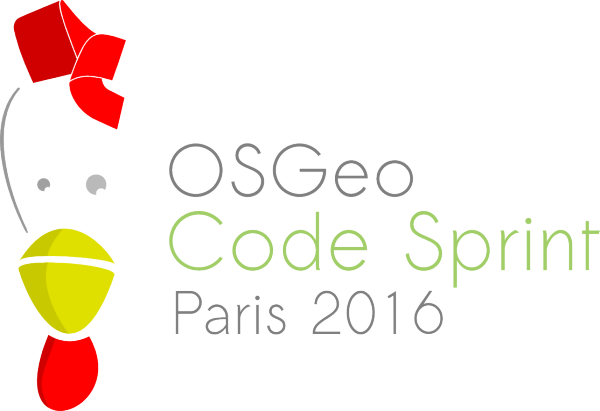
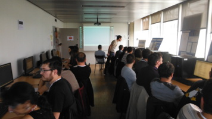

FOSS4G-fr 2016
Rencontre francophone des développeurs et utilisateurs de logiciels libres dédiés à la géomatique
10 - 12 mai 2016 à l'ENSG et sur @FOSS4GFR
Presenté par Etienne Delay .
Un peu d'histoire
Le FOSS4G ? Quezako
FOSS4G est un acronyme pour Free and Open Source Software for Geospatial. C'est le rendez-vous annuel autour des questions de géomatique sous le patronage de l'OSGeo depuis 2006. L'idée d'un rendez-vous autour des problématiques défendues par l'OSGeo est inspirée des rencontres des communautés GRASS-GIS et MapServer qui avaient commencé autour des années 2000.
Le FOSS4G-fr est la déclinaison française de ce mouvement !
Toutes les informations sur les différents FOSS4G sur foss4g.org/
Vous avez dit OSGeo ?
l'OSGeo (Open Source Geospatial foundation) existe depuis 2006. C'est une organisation à but non lucratif dont la mission est de favoriser l'adoption mondiale de la technologie géospatiale ouverte en étant un socle logiciel inclusif consacré à une philosophie ouverte et au développement communautaire participatif.
10 ans!
Les années 90
"Triple helix concept"
- Réunir des gens issus de différents secteurs de la société
- académique
- gouvernementale
- industrielle
- Ouvert, participatif et accueillant
- Free (think of “free speech”, not “free beer” 🍻)
Co-construire des outils adaptés !
Source : Dirk Frigne 2016
Des outils adaptés?
l'outil juste répond à trois exigences :
- il est générateur d'efficience sans dégrader l'autonomie personnelle,
- il ne suscite ni esclaves ni maîtres,
- il élargit le rayon d'action personnel.
Ivan Illiche, 1973, La convivialité, p.27
Illustration : wikimedia.org
{kind=link}
Justice sociale !
L'OSGeo est donc : une communauté de communautés
Source : Arnulf Christl blog
Et ça sert à quoi l'OSGeo ?
- L'OSGeo offre un soutien financier, organisationnel et juridique à la communauté géospatiale open source.
- Elle sert d'entité juridiquement indépendante à laquelle les membres peuvent contribuer par du code, des financements, etc., en sachant que leurs contributions seront maintenues au profit du public.
- Elle sensibilise aux enjeux du logiciel libre en géomatique.
- Elle fournit une plateforme commune pour améliorer la collaboration entre les projets.
- Elle garantit une bonne gouvernance des projets incubés
Comment ça fonctionne ?
- Board of Directors (9 membres)
- Officers (32 membres)
- Chapter Members (279 membres)
Des chapitres locaux dans 44 pays
Source : Arnulf Christl blog
Et ils viennent d'où ?
illustrations de Jorge Sanz (@xurxosanz)
Et l'OSGeo-fr ?

Source : framablog
8 ans
L'OSGeo-fr est une association loi 1901, déclarée au Journal Officiel le 23 août 2008
- 5 membres du bureau
- 50 adhérents à l'association
- 273 inscrits sur la liste de diffusion francophone
Le bureau
|
Président Etienne DELAY |
Trésorier Jean-Marie Arsac |
Secrétaire Anne Quesnel |
|
Resp. communication Thomas Gratier |
Resp. infrastructure  Simon Georget |
Les événements 2015 - 2016
- Trad Sprint
- Code Sprint
- Rencontre des utilisteurs de Qgis
- FOSS4g-fr

Adhérer, c'est participer et rendre possible la suite !
Source de l'image: Reading voluntary action
Le FOSS4G-fr
2014
- Un petit groupe de bénévoles
- Plus d'un an de préparation
- Des centaines d'heures d'IRC
3 jours d'événement, 8 ateliers, 44 conférences, 200 participants !
En 2016 : ils ont donné de leur temps !
- Responsable projet : Etienne Delay.
- Comité de communication : Simon Georget (responsable), Olivier Courtin, Virginie Jourdan, Nicolas Roelandt.
- Comité de financement : Jean-Marie Arsac.
- Comité de programme :Pierre-André Le Ny (responsable), Audrey Malherbe, Arnaud Van De Castelee, Benoit Fournier, Christophe Tufféry, Frédéric Jacon, Nicolas Roelandt, Yves Barthélémy.
- Comité logistique : Olivier Courtin (Responsable), Hugues François, Didier Richard.
- Comité Workshops : Pierre-André Le Ny (responsable), Hugues François.
Responsables :

2016
Cette année le FOSS4G-fr c'est : 10 workshops et 41 conférences
Et pour certains ça a commencé hier
|  |
Le FOSS4G-fr est possible grâce à nos sponsors

Le FOSS4G-fr est possible grâce vous
participants J1 - FOSS4G-fr 2014Informations utiles
Déroulé de la journée
- Introduction 🔊 🏁
- Conférences 🔊
- Pause ☕
- Conférences 🔊
- Repas ⻝
- Conférences 🔊
- Pause ☕
- Conférences 🔊
Pense pas bête
Twitter !
Tweets sur #foss4gfrwidget
THE END
▶
⌨ ⌨
🍻 ☕ 🍻 🍔 ☕
🚹 🚹 🚹 🚹 🚹 🚹 🚹 🚹 🚹 🚹 🚹 🚹 🚹
囍
☻ enjoy !